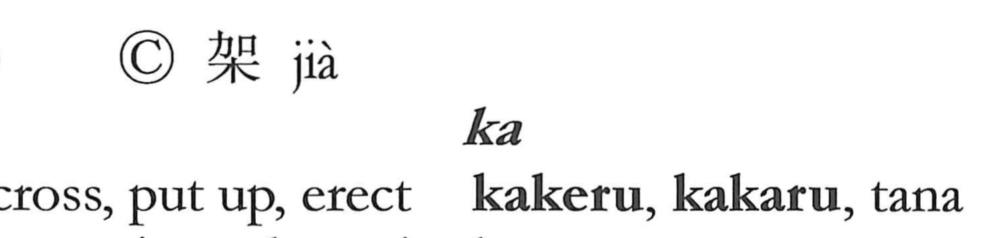

架

Kun: kakeru, kakaru, tana | On: ka
rack ・ shelf ・ beam ・ girder ・ to lay across ・ to erect ・ to put up
Explanation
A phono-semantic character: 木 points to a wooden structure, while 加 serves as the phonetic, giving the on reading ka and evoking the sense of adding or attaching. In early forms it shows two upright posts with a member laid across them, capturing the act of spanning or building across. From this image arise the verb senses “to lay across, to put up, to erect,” and the noun senses “shelf,” “rack,” and by extension “beam” or “girder”—wooden frameworks fashioned in exactly that form.